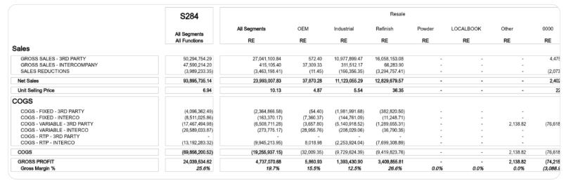
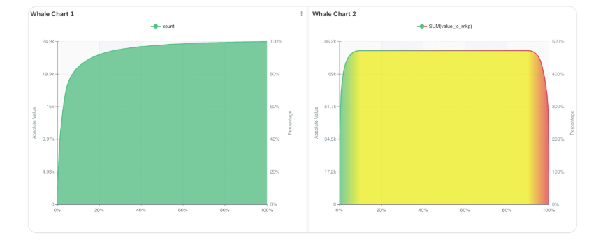
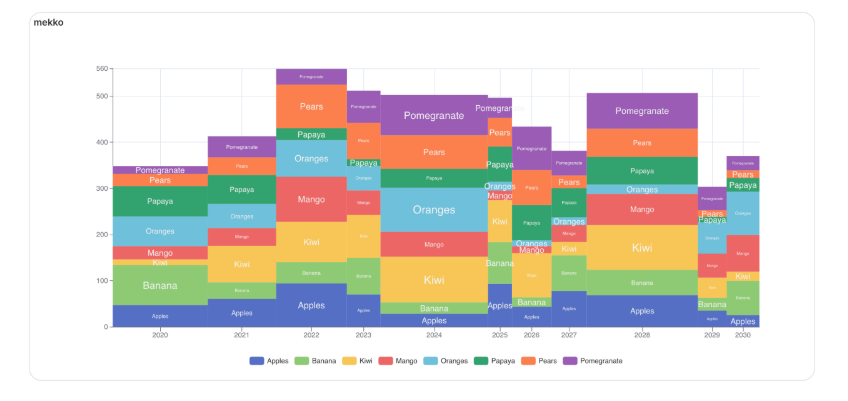

We transform complex data into actionable wisdom. Through cutting-edge analytics and bespoke AI strategies, Woodfrog empowers organizations to see beyond the noise.
Technology is only as good as the decisions it enables. Our human-centric approach ensures that every dashboard and every algorithm serves your core business objectives.
We don't just deploy Apache Superset; we engineer it. From Natural Language to SQL (NL2SQL) integrations to seamless CSS skinning, we make your analytics feel native.



Harness universal dimensions. Multi-layered filtering across your data ecosystem for contextual, actionable insight.
Precision PoP and YTD analysis. Semantic engine logic ensuring indicators reflect true business health at scale.
Custom high-fidelity visualizations. Translating raw data into clear strategy, revealing the invisible pulse of your business.
Bespoke apps and automated workflows. Seamlessly bridging data intelligence and operational excellence for enterprise scale.
Scalable ELT/ETL architectures. Automated orchestration handling data complexity so you focus on strategic insights.
AI without governance is a risk. We implement strict privacy controls, bias detection, and ethical frameworks to ensure your AI journey is secure and compliant.
Deploy thousands of multi-tenant Data Agents. Iron-clad isolation and high-performance execution across your entire source of truth.
Support at the speed of data. Unified workflows for instant, predictive resolutions and total helpdesk clarity.